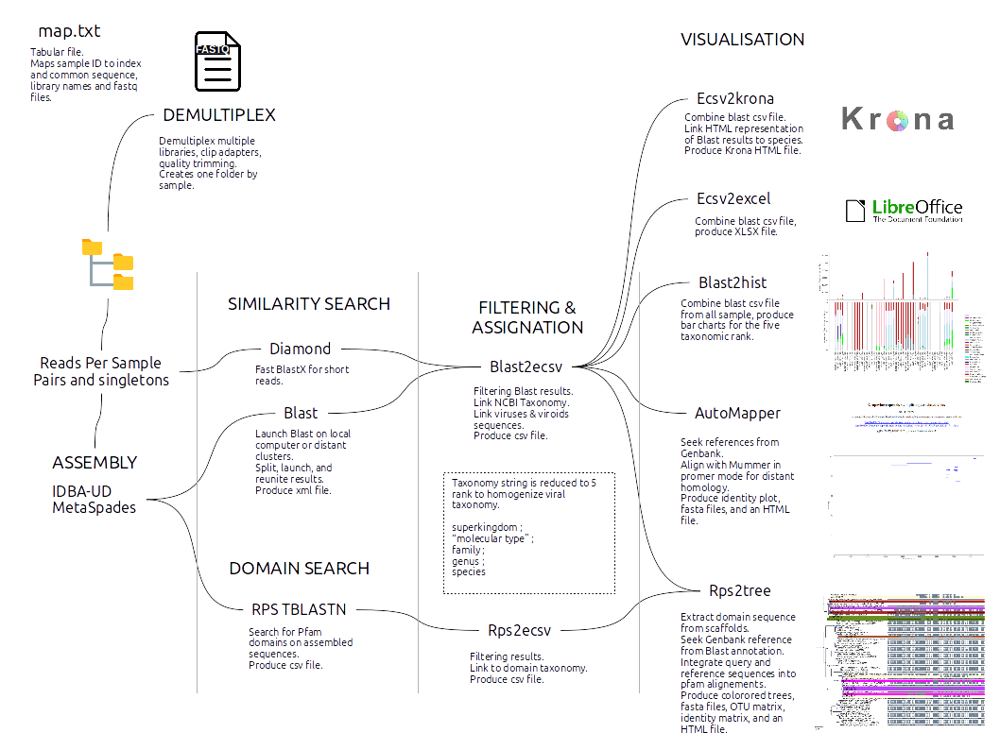
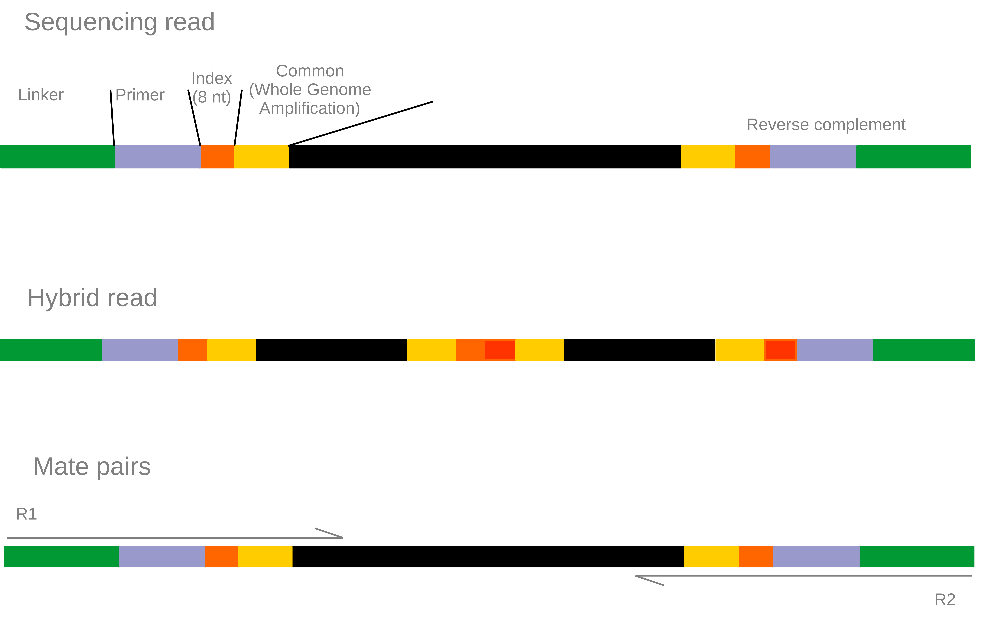

Welcome to VirAnnot’s documentation!¶
VirAnnot was build to ease the assembly, blast search and taxonomic annotation of metagenomic multi-sample datasets. It is used in the Virologie team of UMR1332 BFP laboratory at INRA.
It was designed to identify viruses in plants but it can be used to assemble and then annotate any sequences with the NCBI taxonomy.
NR and NT must be present localy and/or on distant servers and NCBI taxonomy is loaded in SQLITE database with a provided script.
Blast step is the most time consumming step and the use of large computer cluster is clearly an advantage. Here we used two clusters :
AVAKAS at Bordeaux University.
GENOTOUL at Toulouse INRA datacenter.
Pipeline general scheme:¶
Guide¶
Prerequisite¶
External programs¶
- NCBI Blast+ suite (ftp://ftp.ncbi.nlm.nih.gov/blast/executables/blast+/LATEST)
- SQLite (https://www.sqlite.org/)
- Mummer3 (http://mummer.sourceforge.net/)
- Bowtie2 (http://bowtie-bio.sourceforge.net/bowtie2/index.shtml)
- Cutadapt (https://github.com/marcelm/cutadapt)
- ETE tree (http://etetoolkit.org/)
- IDBA-UD (https://github.com/loneknightpy/idba)
- drVM (https://sourceforge.net/projects/sb2nhri/files/drVM/)
- Open Grid Scheduler (http://gridscheduler.sourceforge.net/)
- Diamond (https://github.com/bbuchfink/diamond)
External databases¶
- NCBI nr, nt (ftp://ftp.ncbi.nlm.nih.gov/blast/db/)
- NCBI Taxonomy (ftp://ftp.ncbi.nih.gov/pub/taxonomy)
- PFAM (ftp://ftp.ebi.ac.uk/pub/databases/Pfam/current_release/) (rpsblast files, fasta files, and smp files)
Perl external libraries¶
- Getopt::Long
- File::Basename
- DBI
- Data::Dumper
- Bioperl
- Color::Rgb
- List::Util
- Excel::Writer
- Log::Log4perl
- DBD::SQLite
- SQL::SplitStatement
- Math::Round
Perl included libraries¶
- Tools::Fasta
- Tools::Fastq
- Tools::Blast
- Tools::Taxonomy
- Logger::Logger
Python library¶
- os
- call
- logging
- random
- string
- argparse
- re
- sys
- Bio
- time
- glob
- shutil
- yaml
- csv
- importlib
- matplotlib
Install¶
Add tools and launchers folders to your $PATH.
export PATH=/path/to/tools:/path/to/launchers:$PATH
Add lib folder to your $PERL5LIB.
export PERL5LIB=/path/to/lib:$PERL5LIB
Database¶
NCBI taxonomy and the homemade per domain Pfam taxonomy are stored in a simple SQLite database.
Schema:

NCBI Taxonomy¶
- Download and extract NCBI taxonomy files.
wget ftp://ftp.ncbi.nlm.nih.gov/pub/taxonomy/taxdump.tar.gz ; gunzip taxdump.tar.gz; tar -xf taxdump.tar;
wget ftp://ftp.ncbi.nih.gov/pub/taxonomy/accession2taxid/prot.accession2taxid.gz ; gunzip prot.accession2taxid.gz;
wget ftp://ftp.ncbi.nih.gov/pub/taxonomy/accession2taxid/nucl_gb.accession2taxid.gz ; gunzip nucl_gb.accession2taxid.gz;
Optionally you can combine multiple accession2taxid file with a simple cat. But keep separated nucl and prot accessions as they will be loaded in two different tables.
wget ftp://ftp.ncbi.nih.gov/pub/taxonomy/accession2taxid/dead_prot.accession2taxid.gz ; gunzip dead_prot.accession2taxid.gz;
cat prot.accession2taxid dead_prot.accession2taxid > acc2taxid.prot
wget ftp://ftp.ncbi.nih.gov/pub/taxonomy/accession2taxid/nucl_wgs.accession2taxid.gz ; gunzip nucl_wgs.accession2taxid.gz;
wget ftp://ftp.ncbi.nih.gov/pub/taxonomy/accession2taxid/dead_wgs.accession2taxid.gz ; gunzip dead_wgs.accession2taxid.gz
cat nucl_wgs.accession2taxid nucl_gb.accession2taxid dead_wgs.accession2taxid > acc2taxid.nucl
Launch the loadTaxonomy.pl script that will create the sqlite database. The script needs two provided sqlite files: taxonomyIndex.sql and taxonomyStructure.sql that describe the database struture.
loadTaxonomy.pl -struct taxonomyStructure.sql -index taxonomyIndex.sql -acc_prot acc2taxid.prot -acc_nucl acc2taxid.nucl -names names.dmp -nodes nodes.dmp
PFAM taxonomy¶
The pipeline modules rps2ecsv and rps2tree need taxonomic information of the PFAM domains to work.
You need to extract these informations and load it into the sqlite database.
- Extract taxonomic information for each sequence of each PFAM domain and store it in
*.tax.txtfiles:
\ls -1 *.FASTA | sed 's,^\(.*\)\.FASTA,gi2taxonomy.pl -i & -o \1.tax.txt -r,' | bash
- Create a file of file for the
*.tax.txtfiles:
listPath.pl -d . | grep 'tax.txt' > idx
- Compute taxonomy statistic for each domain and create a sql file to load into the database:
taxo_profile_to_sql.pl -i idx -o taxo_profile.sql
- Load into the database:
sqlite3 taxonomy.tmp.sqlite < taxo_profile.sql
NCBI Blast database¶
NCBI non redundant databases are very large and similarity search using Blast is an intensive task. I recommand to use those databases on computer clusters.
- Download NCBI nr et nt Blast files.
wget ftp://ftp.ncbi.nlm.nih.gov/blast/db/nr.*.tar.gz
wget ftp://ftp.ncbi.nlm.nih.gov/blast/db/nt.*.tar.gz
Modify the parameters.yaml to fit your configuration.
servers:
genotoul:
adress: 'genotoul.toulouse.inra.fr'
username: 'stheil'
db:
nr: '/bank/blastdb/nr'
nt: '/bank/blastdb/nt'
Reduced databases are a good choice for limited computer ressources and drastically faster similarity search. Here are some example commands using NCBI tools to download sequences.
- Reduced NCBI databases:
Get all viroids nucleotide sequence from genbank:
esearch -db "nucleotide" -query "txid12884[Organism]" | efetch -format fasta > viroids_nucl.fna
Get all viruses nucleotide sequences from genbank:
esearch -db "nucleotide" -query "txid10239[Organism]" | efetch -format fasta > viruses_nucl.fna
Create Blast DB example:
makeblastdb -in viruses_nucl.fna -parse_seqids -dbtype nucl
- Download PFAM files for RPSBLAST.
wget ftp://ftp.ncbi.nih.gov/pub/mmdb/cdd/little_endian/Pfam_LE.tar.gz
wget ftp://ftp.ncbi.nih.gov/pub/mmdb/cdd/fasta.tar.gz
wget ftp://ftp.ncbi.nih.gov/pub/mmdb/cdd/cdd.tar.gz
Here I use only PFAM domains but fasta.tar.gz and cdd.tar.gz contains files for the entire CDD database. You can either delete files that are not from PFAM database or use the complete CDD.
- Delete file that are not from PFAM:
\ls -1 | grep -v 'pfam' | sed 's,^.*$,rm &,'
Add ‘| bash’ if correct.
- Download entire CDD database:
wget ftp://ftp.ncbi.nih.gov/pub/mmdb/cdd/little_endian/CDD_LE.tar.gz
Parameters files¶
parameters.yaml¶
Defines paths for both local and remote binaries and databases. A template is provided in the examples directory.
ReadSoustraction:
db:
vitis: '/media/data/db/ncbi/vitis/vitis'
phiX: '/media/data/db/ncbi/phiX/phiX174'
bin:
bowtie: '/usr/local/bin/bowtie2'
samtools: '/usr/bin/samtools'
bedtools: '/usr/bin/bedtools'
prinseq: '/usr/local/bin/prinseq-lite.pl'
merge-paired-reads: '/home/stheil/softwares/sortmerna-2.1-linux-64/scripts/merge-paired-reads.sh'
unmerge-paired-reads: '/home/stheil/softwares/sortmerna-2.1-linux-64/scripts/unmerge-paired-reads.sh'
sortmerna: '/home/stheil/softwares/sortmerna/sortmerna'
servers:
enki:
db:
nt: '/media/data/db/ncbi/nt/nt'
nr: '/media/data/db/ncbi/nr/nr'
refseq_vir_nucl: '/media/data/db/ncbi/refseq_vir/viral.genomic.fna'
refseq_vir_prot: '/media/data/db/ncbi/refseq_vir/viral.protein.faa'
pfam: '/home/stheil/save/db/pfam/pfam_viruses_rpsdb'
all_vir_nucl: '/media/data/db/ncbi/all_vir/all_vir_nucl.fna'
all_vir_prot: '/media/data/db/ncbi/all_vir/all_vir_prot.faa'
genotoul:
adress: 'genotoul.toulouse.inra.fr'
username: 'stheil'
db:
nr: '/bank/blastdb/nr'
nt: '/bank/blastdb/nt'
refseq_vir_nucl: '/save/stheil/db/refseq_vir/viral.genomic.fna'
refseq_vir_prot: '/save/stheil/db/refseq_vir/viral.protein.faa'
pfam: '/home/stheil/save/db/pfam/pfam_viruses_rpsdb'
all_vir_nucl: '/home/stheil/save/db/all_vir/all_vir_nucl.fna'
all_vir_prot: '/home/stheil/save/db/all_vir/all_vir_prot.faa'
scratch: '/work/stheil'
bin:
blastx: 'blastx+'
blastn: 'blastn+'
avakas:
adress: 'avakas.mcia.univ-bordeaux.fr'
username: 'stheil'
db:
nr: '/home/stheil/db/nr/nr'
nt: '/home/stheil/db/nt/nt'
all_vir_nucl: '/home/stheil/scratch/db/all_vir/all_vir_nucl.fna'
all_vir_prot: '/home/stheil/scratch/db/all_vir/all_vir_prot.faa'
refseq_vir_nucl: '/home/stheil/scratch/db/refseq_vir/viral.genomic.fna'
refseq_vir_prot: '/home/stheil/scratch/db/refseq_vir/viral.protein.faa'
pfam: '/home/stheil/db/pfam/pfam_viruses_rpsdb'
scratch: '/scratch/stheil'
bin:
blastx: 'blastx'
blastn: 'blastn'
Diamond:
db:
all_vir_prot: /media/db/ncbi/all_vir/all_vir_prot
SortMeRna:
db:
silva-arc-16s-id95: /media/data/db/rRNA_databases/silva-arc-16s-id95
silva-arc-23s-id98: /media/data/db/rRNA_databases/silva-arc-23s-id98
silva-bac-16s-id90: /media/data/db/rRNA_databases/silva-bac-16s-id90
silva-bac-23s-id98: /media/data/db/rRNA_databases/silva-bac-23s-id98
silva-euk-18s-id95: /media/data/db/rRNA_databases/silva-euk-18s-id95
silva-euk-28s-id98: /media/data/db/rRNA_databases/silva-euk-28s-id98
step.yaml¶
Defines the steps that the pipeline will execute. A template is provided in the /examples directory.
Step names correspond to a python module that will launch the step. Step names are split based on the ‘_’ character so you can launch multiple instance. For example you might want to launch blastx and blastn, so step names could be ‘Blast_N’ and ‘Blast_X’. What is after the underscore do not matters, it is just used to differanciate the two steps.
Special words in bracket are used as substitution string. - (file), (file1) and (file2) - (SampleID) - (library)
ReadSoustraction_phiX:
i1: (file1)
i2: (file2)
db: phiX
o1: (library)_phiX.r1.fq
o2: (library)_phiX.r2.fq
sge: True
n_cpu: 5
iter: library
Demultiplex:
i1: (library)_phiX.r1.fq
i2: (library)_phiX.r2.fq
adapters: adapters.fna
middle: 1
min_qual: 20
polyA: True
min_len: 70
iter: library
sge: True
DemultiplexHtml:
csv: (library)_demultiplex.stats.csv
id: (library)
out: stat_demultiplex
iter: global
sge: True
Normalization:
i1: (SampleID)_truePairs_r1.fq
i2: (SampleID)_truePairs_r2.fq
o1: (SampleID)_truePairs_norm_r1.fq
o2: (SampleID)_truePairs_norm_r2.fq
num: 40000
iter: sample
n_cpu: 5
sge: True
drVM:
i1: (SampleID)_truePairs_r1.fq
i2: (SampleID)_truePairs_r2.fq
n_cpu: 20
identity: 70
min_len: 300
sge: True
Assembly_idba:
prog: idba
n_cpu: 5
i1: (SampleID)_truePairs_r1.fq
i2: (SampleID)_truePairs_r2.fq
out: (SampleID)_idba.scaffold.fa
sge: True
Assembly_spades:
prog: spades
n_cpu: 5
i1: (SampleID)_truePairs_r1.fq
i2: (SampleID)_truePairs_r2.fq
out: (SampleID)_spades.scaffold.fa
sge: True
Map_idba:
contigs: (SampleID)_idba.scaffold.fa
i1: (SampleID)_truePairs_r1.fq
i2: (SampleID)_truePairs_r2.fq
bam: (SampleID)_idba.scaffold.bam
rn: (SampleID)_idba.scaffold.rn
sge: True
n_cpu: 16
Map_spades:
contigs: (SampleID)_spades.scaffold.fa
i1: (SampleID)_truePairs_r1.fq
i2: (SampleID)_truePairs_r2.fq
bam: (SampleID)_spades.scaffold.bam
rn: (SampleID)_spades.scaffold.rn
sge: True
n_cpu: 16
Diamond:
i1: (SampleID)_truePairs_r1.fq
i2: (SampleID)_truePairs_r2.fq
n_cpu: 10
sge: True
score: 50
evalue: 0.0001
qov: 50
hov: 5
db: all_vir_prot
Diamond_singletons_nr:
contigs: (SampleID)_idba.scaffold.fa
db: nr
ising: (SampleID)_singletons.fq
n_cpu: 10
sge: True
out: (SampleID)_singletons_test.nr.dmdx.xml
evalue: 0.001
iter: sample
score: 10
qov: 10
Diamond2blast:
i: (SampleID)_idba.scaffold.dmdx.nr.csv
contigs: (SampleID)_idba.scaffold.dmdx2bltx.fa
out: (SampleID)_idba.scaffold.dmdx2bltx.nr.xml
type: blastx
db: nr
evalue: 0.0001
server: genologin
n_cpu: 8
tc: 50
num_chunk: 1000
max_target_seqs: 1
sge: True
Blast_allvirTX:
type: tblastx
contigs: (SampleID)_idba.scaffold.fa
db: all_vir_nucl
out: (SampleID)_idba.scaffold.tbltx.all_vir.xml
evalue: 0.0001
server: genotoul
n_cpu: 8
sge: True
num_chunk: 1000
tc: 50
Blast_nr:
type: blastx
contigs: (SampleID)_idba.scaffold.fa
db: nr
out: (SampleID)_idba.scaffold.bltx.nr.xml
evalue: 0.0001
server: genotoul
n_cpu: 8
tc: 50
num_chunk: 1000
max_target_seqs: 1
sge: True
Blast_refvirTX:
type: tblastx
contigs: (SampleID)_idba.scaffold.fa
db: refseq_vir_nucl
out: (SampleID)_idba.scaffold.tbltx.refseq_vir.xml
evalue: 0.0001
server: genotoul
n_cpu: 8
tc: 50
num_chunk: 1000
sge: True
Blast_singleton_nr:
type: blastx
contigs: (SampleID)_singletons.fa
db: nr
out: (SampleID)_singletons.bltx.nr.xml
evalue: 0.0001
server: genologin
n_cpu: 8
tc: 10
num_chunk: 1000
sge: True
Blast_RPS:
type: rpstblastn
contigs: (SampleID)_idba.scaffold.fa
db: pfam
evalue: 0.0001
out: (SampleID)_idba.scaffold.rps.pfam.xml
server: genotoul
n_cpu: 8
sge: True
Blast2ecsv_allvirTX:
contigs: (SampleID)_idba.scaffold.fa
evalue: 0.001
fhit: True
pm: global
if: xml
rn: (SampleID)_idba.scaffold.rn
r: True
b: (SampleID)_idba.scaffold.tbltx.all_vir.xml
vs: True
out: (SampleID)_idba.scaffold.tbltx.all_vir.csv
sge: True
type: TBLASTX
score: 50
qov: 20
Blast2ecsv_refvirTX:
contigs: (SampleID)_idba.scaffold.fa
evalue: 0.0001
fhit: True
pm: global
if: xml
rn: (SampleID)_idba.scaffold.rn
r: True
b: (SampleID)_idba.scaffold.tbltx.refseq_vir.xml
vs: True
out: (SampleID)_idba.scaffold.tbltx.refseq_vir.csv
sge: True
type: TBLASTX
score: 50
qov: 50
hov: 5
Blast2ecsv_nr:
contigs: (SampleID)_idba.scaffold.fa
evalue: 0.001
fhit: True
pm: global
if: xml
rn: (SampleID)_idba.scaffold.rn
r: True
b: (SampleID)_idba.scaffold.bltx.nr.xml
vs: True
out: (SampleID)_idba.scaffold.bltx.nr.csv
sge: True
type: BLASTX
score: 50
qov: 5
hov: 5
Blast2ecsv_dmd:
evalue: 0.01
fhit: True
pm: global
if: xml
r: True
b: (SampleID)_dmd.xml
out: (SampleID)_dmd.allVirProt.csv
sge: True
type: BLASTX
pd: True
Blast2ecsv_dmdx_singletons_nr:
contigs: (SampleID)_idba.scaffold.fa
evalue: 0.001
fhit: True
pm: global
if: xml
rn: (SampleID)_idba.scaffold.rn
r: True
b: (SampleID)_singletons.nr.dmdx.xml
vs: True
out: (SampleID)_singletons_test.nr.dmdx.csv
sge: True
type: DIAMONDX
pd: True
Rps2ecsv:
b: (SampleID)_idba.scaffold.rps.pfam.xml
out: (SampleID)_idba.scaffold.rps.pfam.csv
evalue: 0.0001
sge: True
Ecsv2excel:
b1: (SampleID)_idba.scaffold.tbltx.refseq_vir.csv
b2: (SampleID)_idba.scaffold.tbltx.all_vir.csv
b3: (SampleID)_idba.scaffold.bltx.nr.csv
r: (SampleID)_idba.scaffold.rps.pfam.csv
out: (SampleID)_idba.scaffold.xlsx
sge: True
Ecsv2compare:
b1: (SampleID)_idba.scaffold.bltx.nr.csv
r: (SampleID)_idba.scaffold.rps.pfam.csv
out: (SampleID)_idba.scaffold.comparison.xlsx
sge: True
Blast2hist:
id1: (SampleID)_refseq_tbltx
b1: (SampleID)_idba.scaffold.tbltx.refseq_vir.csv
id2: (SampleID)_allvir_tbltx
b2: (SampleID)_idba.scaffold.tbltx.all_vir.csv
id3: (SampleID)_nr_bltx
b3: (SampleID)_idba.scaffold.bltx.nr.csv
id4: (SampleID)_dmd
b4: (SampleID)_dmd.allVirProt.csv
iter: global
sge: True
out: blast_hist
Ecsv2krona:
id1: (SampleID)_refseq_tbltx
b1: (SampleID)_idba.scaffold.tbltx.refseq_vir.csv
x1: (SampleID)_idba.scaffold.tbltx.refseq_vir.xml
id2: (SampleID)_allvir_tbltx
b2: (SampleID)_idba.scaffold.tbltx.all_vir.csv
x2: (SampleID)_idba.scaffold.tbltx.all_vir.xml
id3: (SampleID)_nr_bltx
b3: (SampleID)_idba.scaffold.bltx.nr.csv
x3: (SampleID)_idba.scaffold.bltx.nr.xml
outdir: krona_blast
out: blast.global.krona.html
data: both
r: True
c: identity
iter: global
sge: True
Ecsv2krona_dmd:
id1: (SampleID)
b1: (SampleID)_dmd.allVirProt.csv
outdir: krona_diamond
out: global_krona_dmd.html
data: contig
r: True
c: identity
iter: global
sge: True
Automapper_nr:
contigs: (SampleID)_idba.scaffold.fa
ecsv: (SampleID)_idba.scaffold.bltx.nr.csv
i1: (SampleID)_truePairs_r1.fq
i2: (SampleID)_truePairs_r2.fq
out: (SampleID)_autoMapper_nr
sge: True
ref: nt
Automapper_allvirTX:
contigs: (SampleID)_idba.scaffold.fa
ecsv: (SampleID)_idba.scaffold.tbltx.all_vir.csv
i1: (SampleID)_truePairs_r1.fq
i2: (SampleID)_truePairs_r2.fq
out: (SampleID)_autoMapper_allvir
sge: True
ref: all_vir_nucl
Automapper_refseqTX:
contigs: (SampleID)_idba.scaffold.fa
ecsv: (SampleID)_idba.scaffold.tbltx.refseq_vir.csv
i1: (SampleID)_truePairs_r1.fq
i2: (SampleID)_truePairs_r2.fq
out: (SampleID)_autoMapper_refseq
sge: True
ref: refseq_vir_nucl
Rps2tree:
pfam: (SampleID)_idba.scaffold.rps.pfam.csv
contigs: (SampleID)_idba.scaffold.fa
ecsv: (SampleID)_idba.scaffold.bltx.nr.csv
id: (SampleID)
out: rps2tree_global
min_prot: 100
viral_portion: 0.3
iter: global
sge: True
Getresults:
global_dir1: rps2tree_global
global_dir2: krona_blast
global_dir3: krona_diamond
global_dir4: blast_hist
global_dir5: stat_demultiplex
sample_dir1: (SampleID)_autoMapper_nr
sample_dir2: (SampleID)_autoMapper_refseq
sample_dir3r: (SampleID)_autoMapper_allvir
sample_file1: (SampleID)_idba.scaffold.xlsx
sample_file2: (SampleID)_idba.scaffold.fa
sample_file3: (SampleID)_spades.scaffold.fa
sample_file4: (SampleID)_truePairs_r1.fq
sample_file5: (SampleID)_truePairs_r2.fq
out: results
map.txt¶
The map file describe the experiment. It is a tabulated file with the first line containing headers starting with ‘#’. It must contain at least two column: SampleID and file.
A template is provided in the examples directory.
This is a minimum map.txt file:
#SampleID mid common file1 file2 library
ds2016-121 AACCGCAA TGTGTTGGGTGTGTTTGG Lib1_phiX.R1.fastq Lib1_phiX.R2.fastq lib1
ds2016-132 AACTAGTA TGTGTTGGGTGTGTTTGG Lib1_phiX.R1.fastq Lib1_phiX.R2.fastq lib1
ds2016-122 AGGCGCCT TGTGTTGGGTGTGTTTGG Lib2_phiX.R1.fastq Lib2_phiX.R2.fastq lib2
ds2016-133 ATTAGCTA TGTGTTGGGTGTGTTTGG Lib2_phiX.R1.fastq Lib2_phiX.R2.fastq lib2
ds2016-123 CAAGAGTT TGTGTTGGGTGTGTTTGG Lib3_phiX.R1.fastq Lib3_phiX.R2.fastq lib3
ds2016-55 CAAGCAGG TGTGTTGGGTGTGTTTGG Lib3_phiX.R1.fastq Lib3_phiX.R2.fastq lib3
ds2016-124 CCAACCAT TGTGTTGGGTGTGTTTGG Lib4_phiX.R1.fastq Lib4_phiX.R2.fastq lib4
ds2016-56 CGATAGAG TGTGTTGGGTGTGTTTGG Lib4_phiX.R1.fastq Lib4_phiX.R2.fastq lib4
ds2016-125 GCTCTACC TGTGTTGGGTGTGTTTGG Lib5_phiX.R1.fastq Lib5_phiX.R2.fastq lib5
ds2016-57 GCTGCGGT TGTGTTGGGTGTGTTTGG Lib5_phiX.R1.fastq Lib5_phiX.R2.fastq lib5
ds2016-58 GGCCAGAA TGTGTTGGGTGTGTTTGG Lib6_phiX.R1.fastq Lib6_phiX.R2.fastq lib6
ds2016-10 GGTACTCC TGTGTTGGGTGTGTTTGG Lib6_phiX.R1.fastq Lib6_phiX.R2.fastq lib6
ds2016-11 TCGGATGC TGTGTTGGGTGTGTTTGG Lib7_phiX.R1.fastq Lib7_phiX.R2.fastq lib7
ds2015-149 TCTATGAC TGTGTTGGGTGTGTTTGG Lib7_phiX.R1.fastq Lib7_phiX.R2.fastq lib7
ds2015-162 TTCTGGCT TGTGTTGGGTGTGTTTGG Lib8_phiX.R1.fastq Lib8_phiX.R2.fastq lib8
ds2015-170 TTGCGTCA TGTGTTGGGTGTGTTTGG Lib8_phiX.R1.fastq Lib8_phiX.R2.fastq lib8
You can add categories for each sample so they can be used when coloring sequences in trees from the Rps2tree module.
Modules description¶
ReadSoustraction¶
ReadSoustraction module use bowtie2 to map reads against a reference. The output is directly piped to samtools for bam convertion and again piped to samtools to select unmapped paired reads (-f 12 -F 256). The pipe continues with bamtofastq tool to create two fastq files (r1 and r2).
def _create_cmd (self):
cmd = ''
cmd += self.params['bin']['bowtie'] + ' -p ' + str(self.n_cpu)
cmd += ' -x ' + self.db
cmd += ' -1 ' + self.i1 + ' -2 ' + self.i2 + ' | '
cmd += self.params['bin']['samtools'] + ' view -bS - '
cmd += ' | ' + self.params['bin']['samtools'] + ' view -u -f 12 -F 256 - | ' + self.params['bin']['bedtools'] + ' bamtofastq -i - -fq ' + self.o1 + ' -fq2 ' + self.o2
log.debug(cmd)
return cmd
Options¶
i1: R1 fastq file. [mandatory]i2: R2 fastq file. [mandatory]db: Bowtie database.o1: R1 output fastq file.o2: R2 output fastq file.sge: [BOOL]n_cpu: [INT] Number of CPU to use.iter: [SampleID]
Demultiplex¶
{kind=link}
Warning: This demultiplex procedure is specifc to our sequencing methods.
The demultiplex.pl script uses cutadapt to demultiplex and trim step by step sequences used by the sequencing technology and the dsRNA extraction protocol.
Our extraction and sequencing protocol:
Informations about indexes, common sequences, and sample ids are stored in the map.txt file which must be tab delimited file. The script produce lots of temporary file (*_step_*) that can be deleted at the end of the execution. Each step produce 3 type of files:
- .info:
- the matching information.
- .log:
- the execution information.
- .out:
- the fastq file.
Options¶
i1: R1 fastq file. [mandatory]i2: R2 fastq file. [mandatory]adapters: Fasta file of adapters.middle: Check for MIDs in middle of the reads and 1 : trim the reads or 2: exclude the read.min_qual: Trim the read if the quality is below this threshold.polyA: Trim poly-A tail.min_len: Exclude reads under this size threshold.iter: [SampleID]
Step 01: 5’ index search¶

_launchCutAdapt($self,$files->{1}, $self->{index}, $tmp_file_prefix . "_step.01_R1",'d','k','-g','0','1','0.8');
'd','k': This step discard untrimmed reads, so reads that do not contain indexes are excluded, and keep trimmed reads.'-g': search indexes in 5’.'0': no errors allowed in the index sequence.'1': search for one index in each read.'0.8': 80% of the index length to be considered as a match.
Step 02: 5’ common sequence¶

_launchCutAdapt($self,$files->{1},$self->{_common},$tmp_file_prefix . "_step.02_R1",'k','k','-g','0.1',scalar(keys(%{$self->{_common}})),'0.7');
'k','k': Keep reads that contains or not the common part.'-g': search in 5’ part.'0.1': 10% of sequencing errors.scalar(keys(%{$self->{_common}})): will search as many common part as provided.'0.7': 70% of the common part length to be considered as a match.
Step 03: 5’ common sequence fragments¶

_launchCutAdapt($self,$files->{1},$self->{_common},$tmp_file_prefix . "_step.021_R1",'k','k','-g','0.2',scalar(keys(%{$self->{_common}})),'0.5');
'k','k': Keep reads that contains or not the common part.'-g': search in 5’ part.'0.2': 20% of sequencing errors.scalar(keys(%{$self->{_common}})): will search as many common part as provided.'0.5': 50% of the common part length to be considered as a match.
Step 04: Trimming sequencing adapters¶
{kind=link}
_launchCutAdapt($self,$files->{1},$self->{illuminaAdapter},$tmp_file_prefix . "_step.03_R1",'k','k','-b','0.2',scalar(keys(%{$self->{illuminaAdapter}})),'0.6');
'k','k': Keep reads that contains or not the common part.'-b': search adapters anywhere in the read.'0.2': 20% of sequencing errors.scalar(keys(%{$self->{illuminaAdapter}})): will search as many adapters as provided.'0.6': 60% of the adapters length to be considered as a match.
Step 05: Search for hybrid reads¶
{kind=link}
This step is really specific to our extraction method since very short DNA fragment can be link together during the aspecific adapters ligation step of the Illumina kits. This creating reads composed of two different PCR product. Thus our program search for index sequence in the middle of the read and trim it to keep the 5’ part or exlude the read. The research is done both on provided indexes sequences and reverse complement of thoses sequences.
-middle [1|2] Search for common tag in the middle of the read. 1: trim the read. 2: exclude the read.
_launchCutAdapt($self,$files->{1},$h,$tmp_file_prefix . "_step.04_R1",'k','k','-b','0.1','1','0.5');
'k','k': Keep reads that contains or not the index , or'k','d'if the-middleoption is provided.'-b': search adapters anywhere in the read.'0.1': 20% of sequencing errors.'1': search for one index in each read.'0.5': 50% of the adapters length to be considered as a match.
Step 06: Search for polyA (optional)¶

In Illumina technology, if the sequencing matrix is too short compared to the sequencing length, the sequencing machine adds a bunch of A’s and then radom sequence.
_launchCutAdapt($self,$files->{1}, $h, $tmp_file_prefix . "_step.05_R1",'k','k','-a','0','1','0.8');
'k','k': Keep reads that contains or not the index , or'k','d'if the-middleoption is provided.'-a': search in the 3’ end.'0': no sequencing errors.'1': search for one index in each read.'0.8': 80% of the polyA length to be considered as a match.
Assembly¶
This module can launch two assemblers, IDBA and MetaSpades.
Foreach assembler, the module convert reads files to the proper format, launch the assembly in a separate directory, rename scaffolds identifier and move results file to the sample root directory.
Options¶
Map¶
This module uses bowtie2, samtools and readPerContig.pl script to map reads back on the assembly and count for each scaffold the number of reads aligned resulting a simple two column file scaffoldID and nb_reads used by other modules.
Options¶
contigs: fasta file of contigs to map reads on. [mandatory]i1: R1 fastq file. [mandatory]i2: R2 fastq file. [mandatory]ising: singletons fastq filen_cpu: [INT] number of CPU to use.sge: [BOOL] use SGE scheduler.bam: BAM file name.rn: output file name.
Normalization¶
This module randomly select NUM reads from paired-files.
Options¶
i1: R1 fastq file. [mandatory]i2: R2 fastq file. [mandatory]o1: Output R1 normalized file. [mandatory]o2: Output R2 normalized file. [mandatory]num: [INT] Number of reads to randomly select. [mandatory]iter: Iteration on [sample, library].n_cpu: [INT] number of CPU to use.sge: [BOOL] use SGE scheduler.
Diamond¶
This module launches Diamond similarity search on reads and produce an XML file simalar to what Blast does so it can be treated by the Blast2ecsv module and so on.
Options¶
i1: R1 fastq file. [mandatory]i2: R2 fastq file. [mandatory]db: Values are defined in the parameters.yaml file. [mandatory]ising: singletons fastq filen_cpu: [INT] number of CPU to use.sge: [BOOL] use SGE scheduler.sensitive: [BOOL]more_sensitive: [BOOL]out: XML output filescore: Report matches above this score.max_target_seqs: Maximum match per query sequences.evalue: Min e-value.identity: Report matches above this identity percent. 0 > X > 100.qov: Query overlap.hov: Hit overlap.
Diamond2Blast¶
Options¶
i: CSV file with DIAMOND results. [mandatory]contigs: Fasta file. [mandatory]out: XML output file.type: Blast type. [‘tblastx’,’blastx’,’blastn’,’blastp’,’rpstblastn’]. [mandatory]db: Values are defined in the parameters.yaml file. [mandatory]evalue: Min e-value.server: [‘enki’,’genologin’,’avakas’] Values are defined in the parameters.yaml file.n_cpu: [INT] number of CPU to use.tc: Number of task launched at the same time on SGE.num_chunk: Number of chunks to split the original fasta file for parallel execution.max_target_seqs: Maximum match per query sequences.sge: [BOOL] use SGE scheduler.
Blast¶
This module launches all type of Blast on local machine or distant servers. This module has been developped for our own local machines and servers, but it can be easly modified to fit your needs.
This module mainly depends on the parameters.yaml file and the blast_launch.py script which has to be present on the server you want to use and modified to fit your server configuration.
Options¶
contigs: Fasta file. [mandatory]db: Values are defined in the parameters.yaml file. [mandatory]type: Blast type. [‘tblastx’,’blastx’,’blastn’,’blastp’,’rpstblastn’]. [mandatory]n_cpu: [INT] number of CPU to use.tc: Number of task launched at the same time on SGE. (Experimental, works on Genotoul)max_target_seqs: Maximum match per query sequences.num_chunk: Number of chunks to split the original fasta file for parallel execution.out: Output file name.server: [‘enki’,’genologin’,’avakas’] Values are defined in the parameters.yaml file.sge: [BOOL] use SGE scheduler.
This module is able to launch Blast instance on distant servers if the database and the blast_launch.py script is present on the server. Then you have to edit the parameters.yaml file to fit your configuration. The script has been developped to use two computer cluster, Avakas (PBS + Torque) and Genotoul (SGE) but each cluster has its own configuration so you may have to modify this script to adapt it to your configuration.
Blast2ecsv¶
This module parse Blast xml outputs, filter matches on different criteria and link Accession number to NCBI taxonomy.
Options¶
b: Blast file.if: Input format [‘xml’,’m8’]out: Output file name.evalue: Min e-value.fhit: Only report first hit.fhsp: Only report first hsp.pm:r: Reduced taxonomy. Report only 5 consistent rank.vs: Only report sequences when match is virus or viroids.rn: Read number. File created by the Map module.type: Blast type. [‘tblastx’,’blastx’,’blastn’,’blastp’,’rpstblastn’]score: Report matches above this score.identity: Report matches above this identity percent. 0 > X > 100.qov: Query overlap.hov: Hit overlap.pd: Parse description. Useful when the query ID is stored in the dscription field in the XML file.sge: [BOOL] use SGE scheduler.
Ecsv2excel¶
This module aggregates multiple ecsv file to create a colored XLSX file. It launches the ecsv2krona.pl script.
Options¶
b[INT]: CSV Blast file from 1 to 10.out: Outpuy file name.r: RPSBLAST csv file.sge: [BOOL] use SGE scheduler.
Ecsv2krona¶
This module launch the ecsv2krona.pl script. It will aggregate multiple ecsv file into one Krona html file.
Options¶
b: [INT] CSV Blast file.id: [INT] ID wanted corresponding to the Blast file.x: [INT] XML Blast file. If used, this file will be split by species and link in the Krona file.out: Output file name.data: [‘both’,’reads’,’contigs’,’none’]r: Use reduced taxonomy.c: [‘identity’,’taxid’,’none’]iter: [‘global’]sge: [BOOL] use SGE scheduler.
Rps2ecsv¶
This module launch rps2ecsv.pl script for each sample. This module parse XML files from rpsblast and create csv file as a result.
Options¶
b: RPSBLAST XML file.contigs: Fasta file.sge: [BOOL] use SGE scheduler.out: Output file name.evalue: e-value threshold.
Rps2tree¶
This module launch rps2tree.pl script for all sample provided. This module generates Operational Taxonomic Unit (OTU) based on RPS-Blast results. For each CDD motifs, contigs are clustered together based on matrix distance.
Options¶
pfam: CSV file from Rps2ecsv.contigs: Fasta file.ecsv: CSV file from Blast2ecsv.out: Output file name.sge: [BOOL]viral_portion: Minimum percentage of viral sequence in a domain to be selected.min_prot: Minimum protein length to be included in a tree.perc: Percentage of identity. Threshold set to define OTU.iter: [‘global’]
Example execution¶
Create a directory for your experiment:
mkdir test_virAnnot
cd test_virAnnot
Copy example read files, Illumina adapters fasta file, the sample id mapping file, the step and parameter file:
cp /path/to/virAnnot/examples/reads/*.fq .
cp /path/to/virAnnot/examples/adapters.fa .
cp /path/to/virAnnot/examples/map.txt .
cp /path/to/virAnnot/examples/step.yaml .
cp /path/to/virAnnot/examples/parameters.yaml .
You have to modify this file to fit your configuration.
This example contains all modules and options available and must be used as a template for your own analysis.
Step ReadSoustraction¶
This module uses bowtie2 to map reads against nucleotide sequence and Samtools to extract unmapped pairs.
Corresponding step.yaml section:
ReadSoustraction_phiX:
i1: (file1)
i2: (file2)
db: phiX
o1: (library)_phiX.r1.fq
o2: (library)_phiX.r2.fq
sge: True
n_cpu: 5
iter: library
virAnnot.py -m map.txt -s step.yaml -p parameters.yaml -n ReadSoustraction_phiX
Step Demultiplex¶
This module uses cutadapt demultiplex reads from library and also trim reads from adapters and chimeric reads.
Each demultiplexing step are described in the module section.
Corresponding step.yaml section:
Demultiplex:
i1: (library)_phiX.r1.fq
i2: (library)_phiX.r2.fq
adapters: adapters.fna
middle: 1
min_qual: 20
polyA: True
min_len: 70
iter: library
sge: True
virAnnot.py -m map.txt -s step.yaml -p parameters.yaml -n Demultiplex
Step DemultiplexHtml¶
This module gather all *_demultiplex.stats.csv files and create and html report.
Corresponding step.yaml section:
DemultiplexHtml:
csv: (library)_demultiplex.stats.csv
id: (library)
out: stat_demultiplex
iter: global
sge: True
virAnnot.py -m map.txt -s step.yaml -p parameters.yaml -n DemultiplexHtml
Output example:
Step Diamond¶
This module launch Diamond similarity search for reads and produce an XML file per sample.
n_cpu: 16
Map_spades:
contigs: (SampleID)_spades.scaffold.fa
i1: (SampleID)_truePairs_r1.fq
i2: (SampleID)_truePairs_r2.fq
bam: (SampleID)_spades.scaffold.bam
rn: (SampleID)_spades.scaffold.rn
sge: True
n_cpu: 16
Diamond:
virAnnot.py -m map.txt -s step.yaml -p parameters.yaml -n Diamond
Step Assembly¶
This module simply launch udba_ud and metaspades assemblers in each sample folder, rename scaffolds id and move the resulting fasta file.
n_cpu: 5
sge: True
drVM:
i1: (SampleID)_truePairs_r1.fq
i2: (SampleID)_truePairs_r2.fq
n_cpu: 20
identity: 70
min_len: 300
sge: True
Assembly_idba:
prog: idba
n_cpu: 5
i1: (SampleID)_truePairs_r1.fq
i2: (SampleID)_truePairs_r2.fq
Test both idba and spades:
virAnnot.py -m map.txt -s step.yaml -p parameters.yaml -n Assembly_idba
virAnnot.py -m map.txt -s step.yaml -p parameters.yaml -n Assembly_spades
Example of idba assembly:
>ds2015-149_0
GTGTAAGGTGGTGAAGG...
>ds2015-149_1
CCTGCGAATTGGGCCAA...
Step Map¶
This module uses bowtie2 to map reads back on assemblies and samtools will count reads per contig.
Step file:
out: (SampleID)_idba.scaffold.fa
sge: True
Assembly_spades:
prog: spades
n_cpu: 5
i1: (SampleID)_truePairs_r1.fq
i2: (SampleID)_truePairs_r2.fq
out: (SampleID)_spades.scaffold.fa
sge: True
Map_idba:
contigs: (SampleID)_idba.scaffold.fa
i1: (SampleID)_truePairs_r1.fq
i2: (SampleID)_truePairs_r2.fq
bam: (SampleID)_idba.scaffold.bam
rn: (SampleID)_idba.scaffold.rn
sge: True
Command:
virAnnot.py -m map.txt -s step.yaml -p parameters.yaml -n Map_idba
virAnnot.py -m map.txt -s step.yaml -p parameters.yaml -n Map_spades
Output a two column tabular file, column 1 sequence ID, column 2 number of reads.
Example of .rn file produce:
ds2015-149_0 1179
ds2015-149_1 444
ds2015-149_10 26
ds2015-149_11 44
ds2015-149_12 14
ds2015-149_13 4
ds2015-149_14 6
Step Blast¶
This module is able to launch Blast(s) against provided databases localy or remotely.
The script blast_launch.py must be present on distant servers and parameter.yaml modified to fit your servers.
Step file:
i: (SampleID)_idba.scaffold.dmdx.nr.csv
contigs: (SampleID)_idba.scaffold.dmdx2bltx.fa
out: (SampleID)_idba.scaffold.dmdx2bltx.nr.xml
type: blastx
db: nr
evalue: 0.0001
server: genologin
n_cpu: 8
tc: 50
num_chunk: 1000
max_target_seqs: 1
sge: True
Blast_allvirTX:
type: tblastx
contigs: (SampleID)_idba.scaffold.fa
db: all_vir_nucl
out: (SampleID)_idba.scaffold.tbltx.all_vir.xml
evalue: 0.0001
server: genotoul
n_cpu: 8
sge: True
num_chunk: 1000
tc: 50
Blast_nr:
type: blastx
contigs: (SampleID)_idba.scaffold.fa
db: nr
out: (SampleID)_idba.scaffold.bltx.nr.xml
evalue: 0.0001
server: genotoul
n_cpu: 8
tc: 50
num_chunk: 1000
max_target_seqs: 1
sge: True
Blast_refvirTX:
type: tblastx
contigs: (SampleID)_idba.scaffold.fa
db: refseq_vir_nucl
out: (SampleID)_idba.scaffold.tbltx.refseq_vir.xml
evalue: 0.0001
server: genotoul
n_cpu: 8
Commands:
virAnnot.py -m map.txt -s step.yaml -p parameters.yaml -n Blast_nr
virAnnot.py -m map.txt -s step.yaml -p parameters.yaml -n Blast_refvirTX
virAnnot.py -m map.txt -s step.yaml -p parameters.yaml -n Blast_allvirTX
virAnnot.py -m map.txt -s step.yaml -p parameters.yaml -n Blast_RPS
Step Blast2ecsv¶
This module uses the XML file generated by the corresponding Blast module and the taxonomy contained in the SQLITE database to create a csv file containing match options, taxonomy string and sequences.
virAnnot.py -m map.txt -s step.yaml -p parameters.yaml -n Blast2ecsv_nr
virAnnot.py -m map.txt -s step.yaml -p parameters.yaml -n Blast2ecsv_refvirTX
virAnnot.py -m map.txt -s step.yaml -p parameters.yaml -n Blast2ecsv_allvirTX
Example output of ds2015-149_idba.scaffold.tbltx.all_vir.csv:
#algo query_id nb_reads query_length accession description organism percentIdentity nb_hsps queryOverlap hitOverlap evalue score tax_id taxonomy sequence
"TBLASTX" "ds2015-149_52" "6" "117" "KX274275.1" "Grapevine rupestris stem pitting associated virus isolate SK704 B, complete genome" "Grapevine rupestris stem pitting-associated virus" "95.8" "3" "100" "3" "7.55823333338424e-05" "222.2257" "196400" "Viruses;ssRNA viruses;Betaflexiviridae;Foveavirus;Grapevine rupestris stem pitting-associated virus" "GAACACTATGAACGACAACTGGAAATCTGAGCACGCTATAAACACCCACAAACTCAAACGTAGACAAAGCTTTAACTAAGTTATTCATAATAATCACACCATGCCAAACACTTAAGG"
Step Rps2ecsv¶
This module uses the rpstblastn XML file and the PFAM taxonomy to annotate query sequences and produce a readable CSV file.
virAnnot.py -m map.txt -s step.yaml -p parameters.yaml -n Rps2ecsv
vs: True
out: (SampleID)_idba.scaffold.tbltx.refseq_vir.csv
sge: True
type: TBLASTX
score: 50
Example output of ds2015-149_idba.scaffold.rps.pfam.csv:
#query_id query_length cdd_id hit_id evalue startQ endQ frame description superkingdom no rank family genus
"ds2015-149_0" "1428" "pfam01443" "gnl|CDD|279750" "1.33194e-06" "29" "223" "2" "pfam01443, Viral_helicase1, Viral (Superfamily 1) RNA helicase. Helicase activity for this family has been demonstrated and NTPase activity. This helicase has multiple roles at different stages of viral RNA replication, as dissected by mutational analysis." "Viruses(1.00);" "ssRNA viruses(0.99);unclassified viruses(0.01);" "Alphaflexiviridae(0.36);Virgaviridae(0.24);Betaflexiviridae(0.15);Tymoviridae(0.10);Bromoviridae(0.07);" "Potexvirus(0.26);Allexivirus(0.10);Carlavirus(0.08);Tymovirus(0.08);Tobamovirus(0.08);"
Step Ecsv2excel¶
This module takes all csv files and create a compile them in a single Excel file.
virAnnot.py -m map.txt -s step.yaml -p parameters.yaml -n Ecsv2excel
qov: 50
hov: 5
Blast2ecsv_nr:
contigs: (SampleID)_idba.scaffold.fa
evalue: 0.001
fhit: True
pm: global
Example output of ds2015-149_idba.scaffold.xlsx:

Step Ecsv2krona¶
This module uses CSV files from Blast2ecsv module to create Krona html file.
virAnnot.py -m map.txt -s step.yaml -p parameters.yaml -n Ecsv2krona
virAnnot.py -m map.txt -s step.yaml -p parameters.yaml -n Ecsv2krona_dmd
Example output of Krona:
Step Automapper¶
This module uses Blast CSV annotation file to select reference sequences, map query sequences and produce png of identity plot and alignment file in fasta format.
virAnnot.py -m map.txt -s step.yaml -p parameters.yaml -n Automapper_nr
virAnnot.py -m map.txt -s step.yaml -p parameters.yaml -n Automapper_allvirTX
virAnnot.py -m map.txt -s step.yaml -p parameters.yaml -n Automapper_refseqTX
Example output of ds2015-149/ds2015-149_autoMapper_nr:
Step Rps2tree¶
This module use Rps2ecsv results of all sample to cut and group sequences based on identified domains and create OTUs, identity matrix, tree nexus files and png for each domains colored by SampleID.
virAnnot.py -m map.txt -s step.yaml -p parameters.yaml -n Rps2tree
Step Getresults¶
This module simply copy important results file to a result directory.
virAnnot.py -m map.txt -s step.yaml -p parameters.yaml -n Getresults